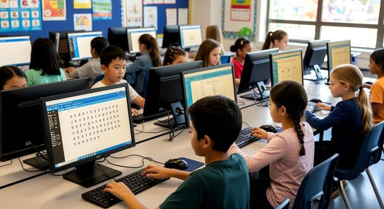

Learning at VP Primary
At VP Primary School, learning is designed to support the growth of the whole child. We create engaging classroom experiences that encourage curiosity, confidence, and a love for learning while helping learners build important life skills.
- ✔ Developing strong literacy and numeracy skills
- ✔ Encouraging curiosity and creative thinking
- ✔ Using technology to support modern learning
- ✔ Supporting each learner’s individual growth


